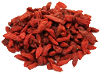

Baie de Goji
Duis non odio ultricies, lacinia risus eu, semper erat. Proin imperdiet neque ut magna vestibulum placerat. Nunc maximus venenatis pharetra. Etiam et tristique quam. Donec vehicula pulvinar tellus vitae condimentum. Nullam ac ornare massa. Nullam sed eleifend lacus, ac gravida felis. Praesent dignissim semper sem non accumsan. Nam imperdiet, tortor sed ultricies accumsan, ipsum leo fringilla neque, a consectetur tellus diam non nisl. Vestibulum et metus sit amet diam convallis pretium vitae sit amet neque.
Poster le : 10/12/2015
Duis non odio ultricies, lacinia risus eu, semper erat. Proin imperdiet neque ut magna vestibulum placerat. Nunc maximus venenatis pharetra. Etiam et tristique quam. Donec vehicula pulvinar tellus vitae condimentum. Nullam ac ornare massa. Nullam sed eleifend lacus, ac gravida felis. Praesent dignissim semper sem non accumsan. Nam imperdiet, tortor sed ultricies accumsan, ipsum leo fringilla neque, a consectetur tellus diam non nisl. Vestibulum et metus sit amet diam convallis pretium vitae sit amet neque.
Poster le : 11/12/2015
Duis non odio ultricies, lacinia risus eu, semper erat. Proin imperdiet neque ut magna vestibulum placerat. Nunc maximus venenatis pharetra. Etiam et tristique quam. Donec vehicula pulvinar tellus vitae condimentum. Nullam ac ornare massa. Nullam sed eleifend lacus, ac gravida felis. Praesent dignissim semper sem non accumsan. Nam imperdiet, tortor sed ultricies accumsan, ipsum leo fringilla neque, a consectetur tellus diam non nisl. Vestibulum et metus sit amet diam convallis pretium vitae sit amet neque.
Poster le : 12/12/2015
Duis non odio ultricies, lacinia risus eu, semper erat. Proin imperdiet neque ut magna vestibulum placerat. Nunc maximus venenatis pharetra. Etiam et tristique quam. Donec vehicula pulvinar tellus vitae condimentum. Nullam ac ornare massa. Nullam sed eleifend lacus, ac gravida felis. Praesent dignissim semper sem non accumsan. Nam imperdiet, tortor sed ultricies accumsan, ipsum leo fringilla neque, a consectetur tellus diam non nisl. Vestibulum et metus sit amet diam convallis pretium vitae sit amet neque.
Poster le : 13/12/2015
Boutique en ligne
Les bienfaits du Goji
Le Goji en dietetique
Le Goji en nutrition
Le Goji et la santé
Information sur le Goji
Documentation spécifique
Entretien et Interwiews
Cuisinez avec le GoJI
Moelleux aux chocolat et Goji
Lien
Liens vers un site
Dernier commentaire
Titi : Decouvrez les baies de Goji
Archives
Juin 2012